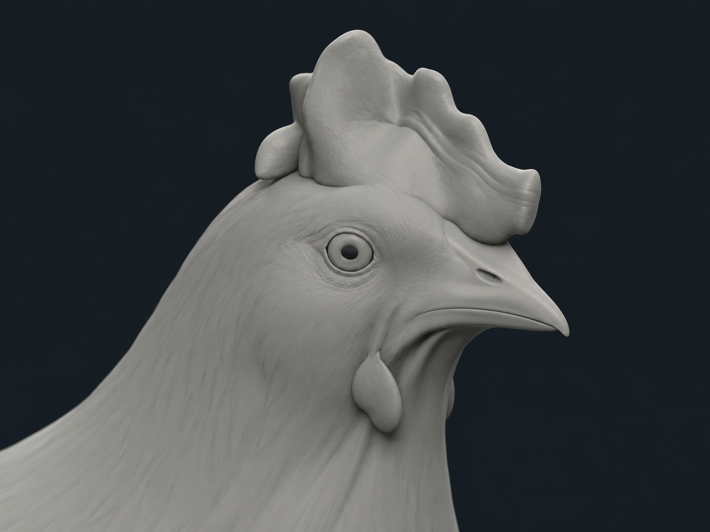
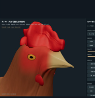
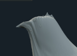
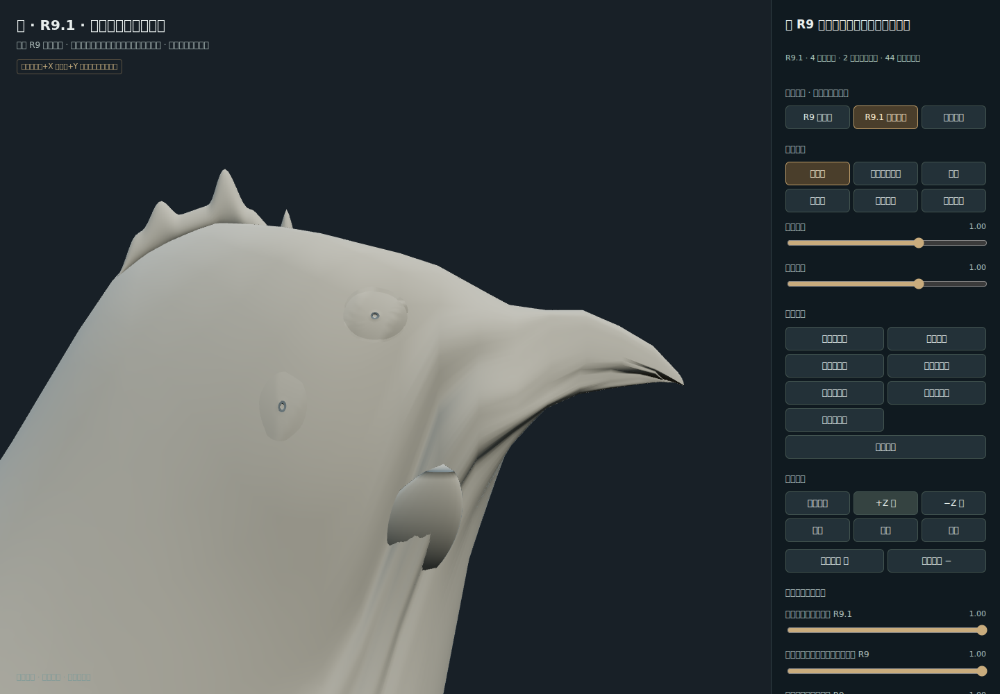
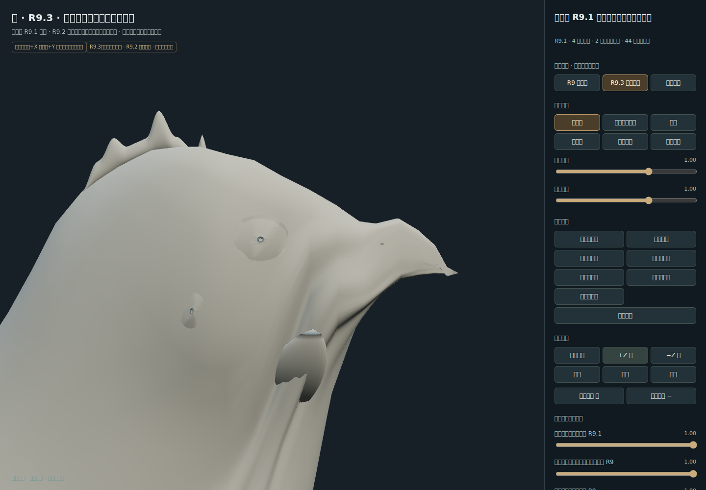
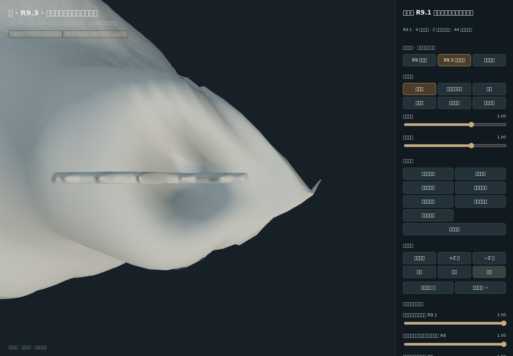
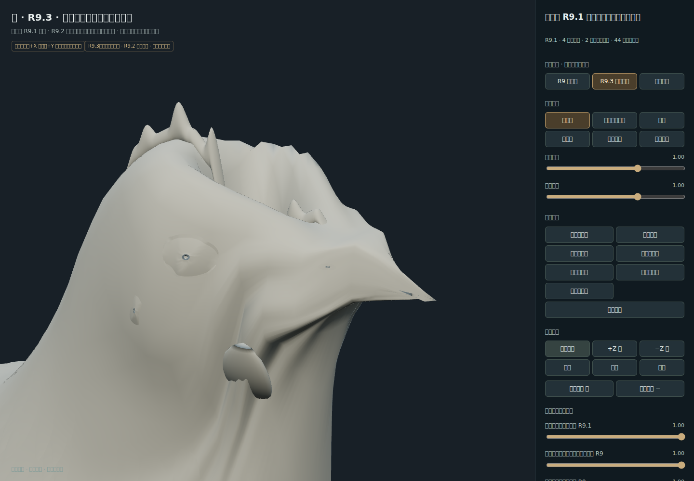
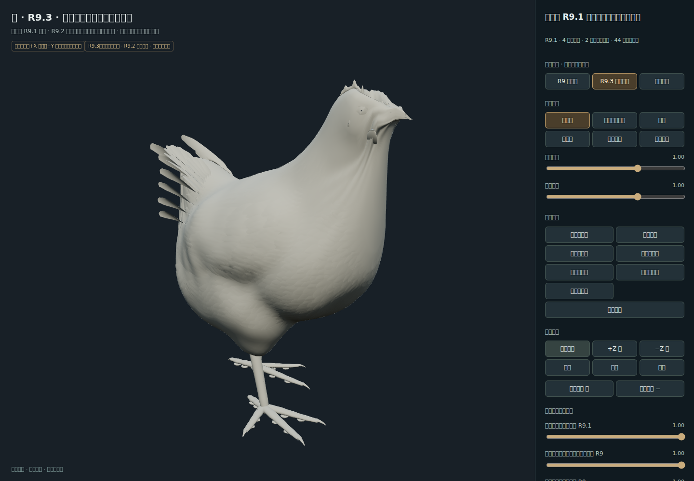

R9.2 虽通过浏览器技术检查，但因全环膨胀把头颈做成长楔形，视觉门禁判定失败。本版从冻结 R9.1 重建，只允许上部颅体、脸颊、下颌和喙的局部变化。
r9_2VisualGate=false · manualVisualAcceptance=false · rigAuthorized=false
入口：../../CHICKEN_V46_R9_3_HEAD_SHAPE.html







